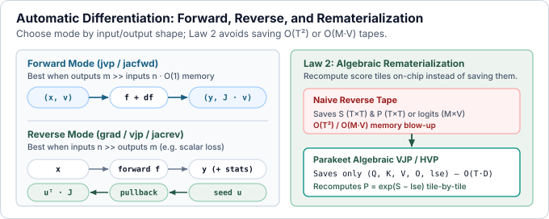

Automatic differentiation¶
Parakeet differentiates functions directly at the operator level, so derivatives go through the same fusion, cache/GPU tiling, and parallel code generation as the forward pass.
Forward mode vs. reverse mode¶
For a function f: Rⁿ → Rᵐ with Jacobian J (shape m × n), choose the mode
that matches your input/output shape:
- Reverse mode (
par.grad,par.vjp,par.jacrev) computes a vector-Jacobian productuᵀ · Jin cost proportional to outputsm. Use it whenn ≫ m(scalar training losses, inverse problems). - Forward mode (
par.jvp,par.jacfwd) computes a Jacobian-vector productJ · vin cost proportional to inputsnwithO(1)extra memory and no backward tape—even through long loops. Use it whenm ≫ n, for directional derivatives, or inside forward-over-reversepar.hvp.

The two modes are exact linear transposes of one another for any input x,
tangent v, and cotangent u:
API overview¶
| API | Mode | What it computes |
|---|---|---|
par.grad(f, wrt=0) |
Reverse | Gradient of a scalar loss by position (0) or parameter name ("w") |
par.value_and_grad(f, wrt=0) |
Reverse | Forward scalar value and gradient in one compiled call |
par.vjp(f, *primals) |
Reverse | (y, pullback) for array, tuple, record, or RaggedArray outputs |
par.jvp(f, primals, tangents) |
Forward | Directional derivative (f(*primals), J · tangents) in one forward pass |
par.linearize(f, *primals) |
Forward | Forward value y plus reusable linear map v -> J · v |
par.linear_transpose(L, *example_inputs) |
Transpose | Exact linear adjoint u -> Lᵀ(u) of a linear function L |
par.hvp(f, primals, tangents) |
Fwd-over-rev | Hessian-vector product H(x) · v |
par.jacfwd(f) / par.jacrev(f) |
Fwd / Rev | Full Jacobian (jacfwd for n ≤ m, jacrev for m < n) |
par.hessian(f, argnum=0) |
Fwd-over-rev | Full Hessian matrix |
@par.checkpoint |
Memory | Recompute a block during backprop instead of saving intermediates |
@par.jit(jvp=..., vjp=...) |
Custom | Attach flat forward or closure-style reverse rules directly |
@par.jvp_for(fn) / @par.vjp_for(fn) |
Custom | Register custom rules on an existing function |
Reverse-mode gradients (grad and value_and_grad)¶
import numpy as np
import parakeet as par
def loss(w, b, x, y):
return np.mean((np.tanh(x @ w + b) - y) ** 2)
g = par.grad(loss)(w, b, x, y) # d loss / d w
value, g = par.value_and_grad(loss, wrt="w")(w, b, x, y) # by parameter name
gw, gb = par.grad(loss, wrt=("w", "b"))(x=x, y=y, w=w, b=b) # keyword args work too
Differentiated arguments may be floats, float/complex arrays, RaggedArrays, or
nested tuples, NamedTuples, fixed-key dicts, and @dataclass records
(discrete fields like int, bool, or str pass through as zero-tangent
leaves):
def mlp(params, x, y):
(w1, b1), (w2, b2) = params
h = np.tanh(x @ w1 + b1)
return np.mean((h @ w2 + b2 - y) ** 2)
(gw1, gb1), (gw2, gb2) = par.grad(mlp)(params, x, y)
Calling par.grad inside @par.jit compiles the entire training loop into one
native function (see Train nanoGPT and
examples/convnet.py):
@par.jit
def descend(w, x, y, rate, steps):
for _ in range(steps):
w = w - rate * par.grad(loss)(w, x, y)
return w
Forward mode (jvp), general vjp, and higher-order AD¶
def f(x, w):
z = np.tanh(x @ w)
return z, np.sum(z * z, axis=1)
# Forward-mode JVP (O(1) extra memory, single forward pass)
(y1, y2), (dy1, dy2) = par.jvp(f, (x, w), (vx, vw))
# General non-scalar VJP
(y1, y2), pullback = par.vjp(f, x, w)
gx, gw = pullback((u1, u2))
par.hvp computes Hessian-vector products via forward-over-reverse
(jvp(grad(f))) in one fused pass—including through checkpointed loops,
LayerNorm, and tiled attention (recomputing score tiles on the fly without
allocating T × T matrices):
def objective(w, x):
h = np.tanh(x @ w)
return np.sum(h * h * h)
hv = par.hvp(lambda w_: objective(w_, x), w, v) # H(w) · v
H = par.hessian(lambda w_: objective(w_, x))(w) # full Hessian
J_fwd = par.jacfwd(lambda w_: np.tanh(x @ w_))(w)
J_rev = par.jacrev(lambda w_: np.tanh(x @ w_))(w)
Nested reverse-over-reverse (par.grad(par.grad(...))) also works through
element-wise ops, reductions, matmuls, views, stack/concatenate, cumsum,
gather/scatter-add, and scalar par.map.
Supported operations¶
| Category | Supported operations |
|---|---|
| Arithmetic & math | + - * / **, exp, tanh, maximum, where, abs, clip, … with broadcasting (ties in min/max/abs/topk split derivatives equally) |
| Reductions | sum, mean, var, std, max, min, prod (zero-safe), linalg.norm, par.reduce (including arbitrary user folds) |
| Linear algebra | @, dot, matmul (vectors, matrices, batches), einsum; linalg.det, inv, solve, cholesky (rev + fwd), eigh, eigvalsh, svd, pinv (rev) |
| Scans, sort & select | cumsum, par.scan, sort, par.topk, par.topk_fold |
| Views, gather & scatter | Slicing, .T, reshape, transpose, gather x[idx], FrozenHashTable.get, SortedIndex.get, np.add.at, out[idx[i]] += v, par.scatter_add |
| Array building & operators | concatenate, stack, comprehensions, par.map, par.allpairs, par.imap, par.fold, par.wavefront, par.soft_align |
| Containers | Nested tuples, NamedTuple, fixed string-key dicts, @dataclass, RaggedArray |
Loops and branches¶
| Construct | Reverse-mode strategy | Forward-mode strategy |
|---|---|---|
Small static for (≤ 32 iters or heterogeneous tuple) |
Unrolled onto tape (zero checkpoint cost) | Unrolled in single forward pass |
Long or runtime-bound for (range(n), 10k+ iters) |
O(√T) checkpointed reverse loop (constant IR size) |
Single forward pass, O(1) memory |
Data-dependent while loop |
Fixed-slot stride-doubling checkpointed reverse (O(log T) slots) |
Single forward pass, O(1) memory |
Custom par.reduce / 1-D par.scan |
O(√N) checkpointed reverse / direct reverse scan |
Single forward pass |
Runtime if / else |
Evaluates both pure branches and selects (guard-only raise skips unselected side) |
Selects tangent alongside value |
Loops not touching differentiated state are left untouched. Loops with break,
continue, or early return over differentiated state—and runtime if
branches containing array stores, return, break, or raise—fail loudly at
compile time.
Custom rules, stop_gradient, and checkpoint¶
@par.jit(jvp=..., vjp=...)attaches custom rules with plain flat signatures:jvp(*primals, *tangents) -> (output, d_output)vjp(*primals) -> (output, pullback)wherepullback(d_output) -> d_inputs(or pass a(fwd, bwd)tuple for explicit residuals)
def smooth_relu_jvp(x, dx):
return np.maximum(x, 0.0), dx / (1.0 + np.exp(-x))
def smooth_relu_vjp(x):
return np.maximum(x, 0.0), lambda dy: dy / (1.0 + np.exp(-x))
@par.jit(jvp=smooth_relu_jvp, vjp=smooth_relu_vjp)
def smooth_relu(x):
return np.maximum(x, 0.0)
@par.jvp_for(fn)/@par.vjp_for(fn)register rules on an existing function (JAX-style@par.custom_jvp/@par.custom_vjpremain as aliases).par.stop_gradient(x)detaches any scalar, array, record, orRaggedArrayfrom both forward and reverse AD with zero copy.@par.checkpointdiscards forward intermediates for a block and rematerializes them during backprop, composing automatically with Law 2 algebraic rematerialization for attention, linear cross-entropy, softmax, and LayerNorm / RMSNorm.
In-place stores and fail-loud guarantees¶
Slice assignments, indexed updates, and in-place additions (out[:3] = ...,
out += bias, np.add.at) are differentiated accurately. Overwriting a buffer
that an earlier backward rule still requires (y = np.tanh(h); h[0] = 5.0) is
detected and refused at compile time.
Parakeet never silently drops gradients. Any unsupported operation on the
differentiated path (such as np.cumprod, np.convolve, or arbitrary indexed
overwrites out[idx] = v) raises an UnsupportedError naming the line:
UnsupportedError: cannot differentiate through cumprod() (line 12): its derivative is not implemented
Implementation modules:
autodiff.py,
jvp.py,
algebraic_vjp.py.